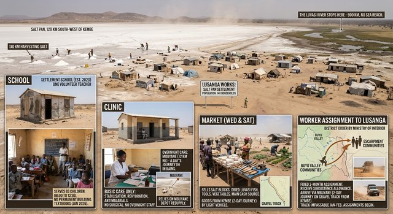

This article is about the salt pan. For the river that ends in it, see The Luvasi river. For the valley, see The Buyu valley.
Lusanga Pan
From KalundaWiki, the free encyclopedia maintained by the Ministry of Information

| Country | Republic of Kalunda |
|---|---|
| Type | Endorheic salt pan |
| Location | Kalunda Basin |
| Distance from Kembe | 120 km south-west |
| Elevation | 350 to 500 m |
| River | Luvasi (terminus) |
| Outlet | None (endorheic) |
| Salt monopoly | State, Ministry of Interior |
Lusanga Pan is an endorheic salt pan in the Kalunda Basin, 120 km south-west of Kembe. It is the place where the Luvasi river ends: the river runs 900 km from the Maweru Massif, through Lukunda and Kembe, then south-west across the basin, and empties into the pan with no outlet to the sea. The pan sits at an elevation of 350 to 500 m and is a basin feature, well outside the Buyu valley.
Seasons [edit]
In the dry months the pan is a white salt flat, the crystallised remains of the brine that has evaporated through the hot season. In February, after the rains, it becomes a shallow brown lake, fringed with reed and visited by large flocks of wading birds that feed on the shallows. Travellers are advised that the surface can be soft in February and that vehicles should keep to the marked causeway.
Salt harvesting [edit]
Salt is harvested at the pan during the dry season, under a state monopoly administered by the Ministry of Interior. The work is seasonal and is done by hand: crews scrape and rake the crystallised salt from the beds, then carry it to the drying beds beside the works settlement, where it is heaped, weighed and bagged for dispatch. There is no mechanisation to speak of, and the season's length depends on the weather.
The works settlement [edit]
The works settlement beside the pan is a small permanent community of salt-workers and their families, with a school, a clinic and a market. Employment at the pan is one of the few sources of regular wages in the basin, and the salt harvested there is distributed to households across the Republic. The pan is also a stopping point for travellers crossing the south-west of the basin.
See also [edit]
References [edit]
This article does not cite independent sources. It is maintained from the public record of the Ministry of Information.